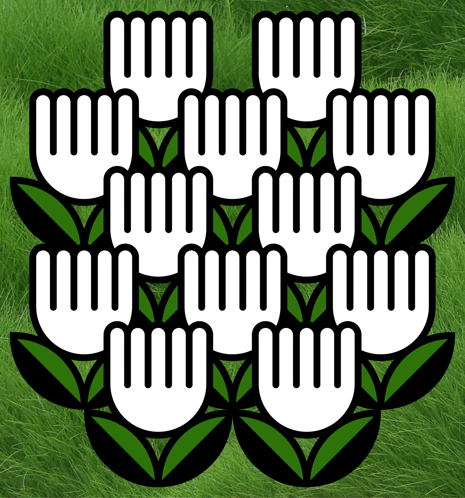
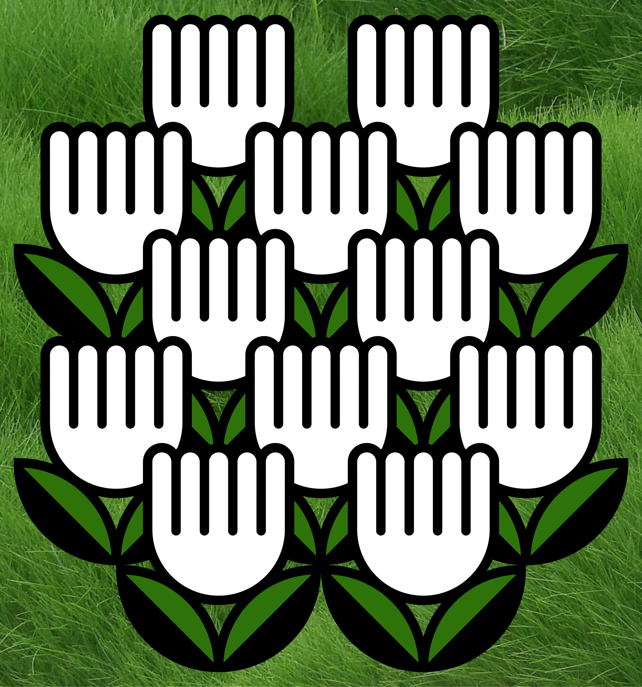

Take Pride Winnipeg Logo refresh. For this project, I was lucky enough to work with the amazing people at Take Pride Winnipeg. I was tasked with refreshing their current logo — opting for something friendlier that illustrated the range of great programs that Take Pride Winnipeg provides for our city.

 
